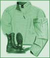

|
The most basic of all survival equipment. Although dressing ourselves comes naturally to us, not everyone knows how to dress properly for different situations. Try dressing in layers so you can add or remove clothing, as you become hot or cold, without becoming over heated or chilled. Footwear is the most important of all clothing. Without the proper footwear you are prone to injured ankles, blisters and all kinds of foot injuries.
|